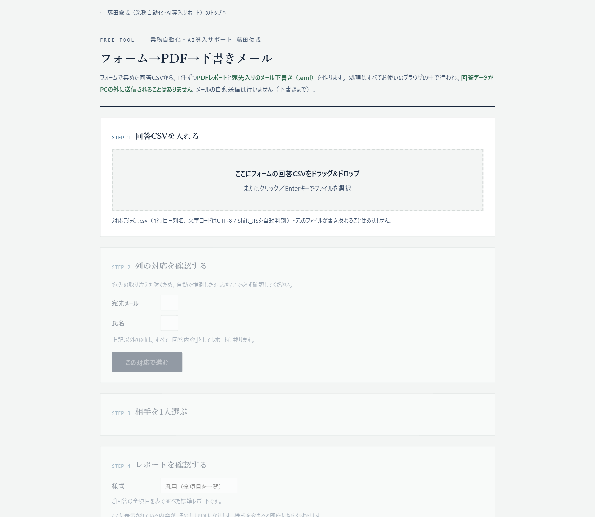
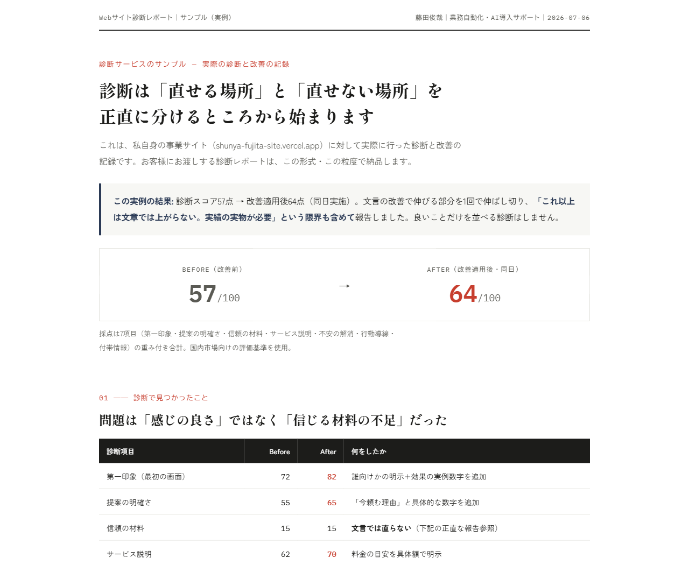

その作業、人がやらなくていいかもしれません
- 01毎月のデータ集計・転記に時間が消える
複数のExcelやCSVから必要な数字を拾って、レポートに手で貼り付けている。月末のたびに数時間かかっている。
- 02紙・FAX・フォームの内容を手で入力している
紙のアンケートや伝票、フォームの回答を、システムやスプレッドシートに1件ずつ打ち込んでいる。
- 03ツールとツールの間を人間が往復している
フォームの回答を見てメールを書く、シートを見てLINEで知らせる——「見て、写して、送る」を毎日繰り返している。
この3つはどれも、大きなシステムではなく“小さな仕組み”で解決できる種類の面倒です。
小さく始めて、着実に楽にします
業務・Webの健康診断
今の業務の「どこに時間が消えているか」を見える化し、自動化すべき箇所と、それでどれだけ手間が減るかをレポートにしてお渡しします。Webサイトの改善診断にも対応します。
自動化ツールの製作
Excel・スプレッドシートの集計、帳票の処理、フォームと通知の連携など、御社の業務に合わせた自動化の仕組みを製作します。使い方マニュアル付きで納品します。
ウェブサイトの制作
会社案内やサービス紹介のサイトを、構成のご相談から文章・デザイン・公開まで一貫して制作します。見た目を整えるだけでは、問い合わせは増えません。「誰に何を伝え、何をしてもらうサイトか」を決めるところから始めます。
公開後に実際の画面を計測し、パソコン・スマートフォンのどちらでも崩れがないことを確かめるところまでを仕事と考えています。
AI活用の伴走サポート
「AIを使いたいが、何から始めればいいかわからない」に、導入のご相談から、社内で当たり前に使えるようになるまで継続して支援します。
ツールを納品して終わりではなく、御社の中で“使われ続ける”ところまでを仕事と考えています。
実績

本番で公開している画面をそのまま掲載しています。回答データがPCの外に送信されることはありません。

公開しているサンプルレポートの画面をそのまま掲載しています。数値・改善内容はすべて実例です。
CSV/Excelまとめて集計ツール
支店ごと・取引先ごとに分かれた複数のCSV・Excelを、ブラウザに入れるだけで1つの集計レポート（Excel）にまとめる無料ツールです。インストール不要で、データはお使いのパソコンの外に送信されません。「毎月の集計・転記」の手間をなくす一例として、実際に動くものを公開しています。
フォーム回答からPDFレポート＋メール下書きを作るツール
アンケートや申込フォームの回答CSVから、回答者一人ひとりのPDFレポートと、宛先・件名・本文・添付ファイルが入ったメールの下書きを作る無料ツールです。「1件ずつPDFを作ってメールに貼り付ける」という、人数分くり返すしかなかった作業をなくします。レポートの見せ方は3種類から選べます。こちらもインストール不要で、回答データ（お名前・メールアドレス）はお使いのパソコンの外に送信されません。
安心してお任せいただくために
- STEP 01作る前に、認識を揃えます
ご依頼内容を私の言葉で整理してお見せし、ズレがないことをご確認いただいてから着手します。
- STEP 02大切なデータをお預かりしません
開発はテスト用のダミーデータで行い、実際のデータやパスワードは御社の環境の外に出しません。
- STEP 03マニュアルを標準でお付けします
パソコンが得意でない方でも使えるよう、専門用語のない使い方マニュアルを同梱します。
- STEP 04納品後1週間は無償で修正します
納品して終わりにしません。継続的な保守・改善のプランもご用意しています。
費用は、着手前にすべてお見せします
| 項目 | 目安 | 備考 |
|---|---|---|
| 業務・Webの健康診断レポートまずはこちら | 20,000円 | — |
| 自動化ツールの製作 | 10〜25万円 | 使い方マニュアル込み |
| ウェブサイトの制作 | 20〜40万円 | 構成・文章・公開まで |
| AI活用の伴走サポート | 内容に応じて個別お見積り | — |
金額の幅は、作業の量と期間によって決まります。お見積りは無料です。着手前に確定金額をご提示します。作業の途中で追加費用が必要になる場合は、必ず事前にご相談し、ご了承いただくまで進めません。
よくあるご質問
Q1相談には何を準備すればいいですか？
現状の「面倒な作業」を口頭でお話しいただければ十分です。資料やデータは、必要になった段階でこちらからご案内します。
Q2パソコンが得意な社員がいなくても使えますか？
専門用語のない使い方マニュアルを標準でお付けします。使い始めて気づいた点も、納品後1週間の無償修正期間にご相談いただけます。
Q3社内のデータを渡す必要がありますか？
いいえ。開発は本物ではないテスト用のデータで行い、実際のデータやパスワードをお預かりすることはありません。
Q4どんな作業が自動化に向いていますか？
「毎月・毎週くり返している」「手順がだいたい決まっている」作業ほど向いています。向き不向きの判断も、無料相談の範囲で行います。
Q5費用はどのように決まりますか？
作業の内容と量を伺ってから、着手前にお見積りを提示します。お見積りは無料で、金額にご納得いただいてからの着手です。
Q6相談したら、必ず依頼しないといけませんか？
いいえ。「そもそも自動化できるのか」を確かめるだけのご相談も歓迎です。無理な営業はいたしません。
Q7ウェブサイトの制作もお願いできますか？
はい。会社案内やサービス紹介のサイトの新規制作をお請けしています。構成のご相談から文章・デザイン・公開までを一貫して担当します。既存サイトの改修や保守のみのご依頼は、品質に責任を持てる範囲を超えるためお請けしておりません。
ご挨拶
藤田俊哉SHUNYA FUJITA
IT業界で勤務し、現場の定型業務と「人手が足りない」実情を日々見てきました。AIを活用した業務改善・自動化を専門に、難しい専門用語を使わず、現場の「面倒」を伺うところから始めるのが信条です。技術の話ではなく、御社の業務の話をさせてください。
まずは、お話を聞かせてください
- 01下のフォームから送信（うまくまとまっていなくて大丈夫です）
- 0224時間以内にご返信します
- 03現状の「面倒」を伺います（メールまたはオンライン・無料）
- 04お見積りをご提示。ご納得いただいてからの着手です
「これって自動化できるの？」という段階のご相談も歓迎です。
手作業は、続けた月の数だけ時間を失います。一人で丁寧に対応しているため、同時にお受けできる件数には限りがあります。